|
Chapitre 11
|
|
Partie 1
|
- Se repérer dans l’espace
|
Représentation d'un solide :
Un solide est une figure géométrique en trois dimensions.
Exemples :
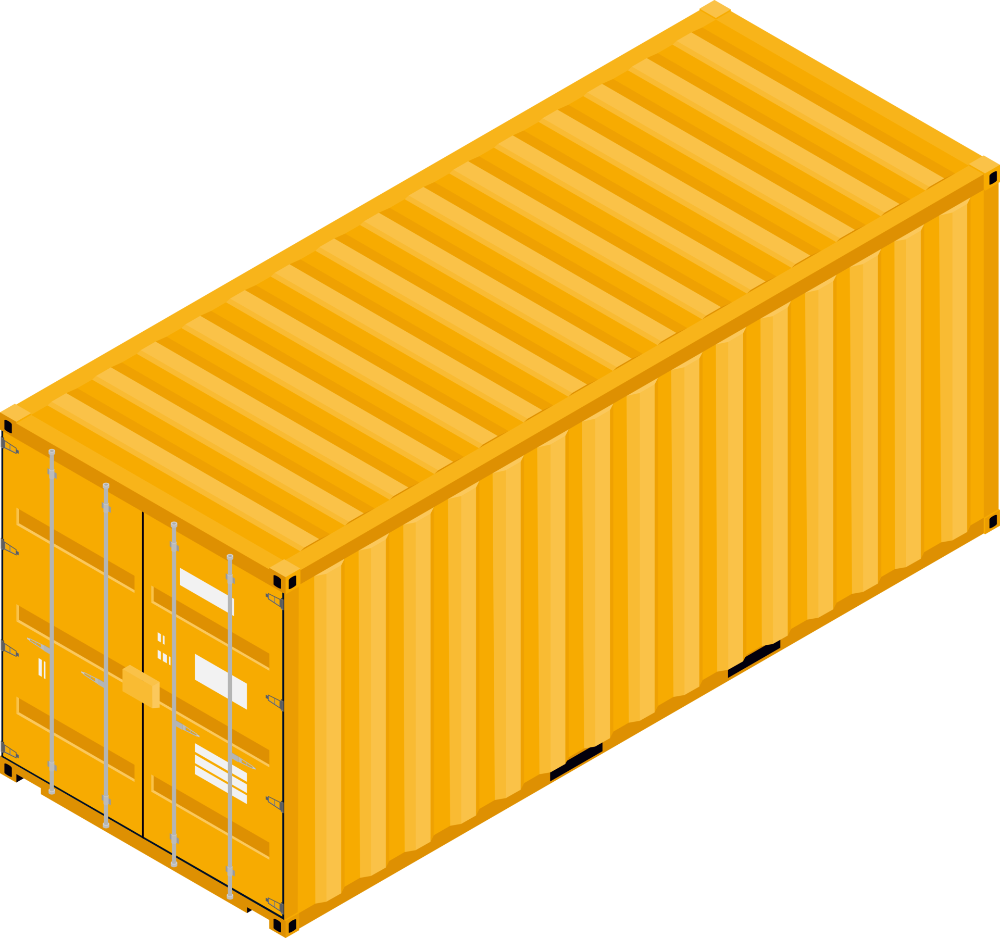
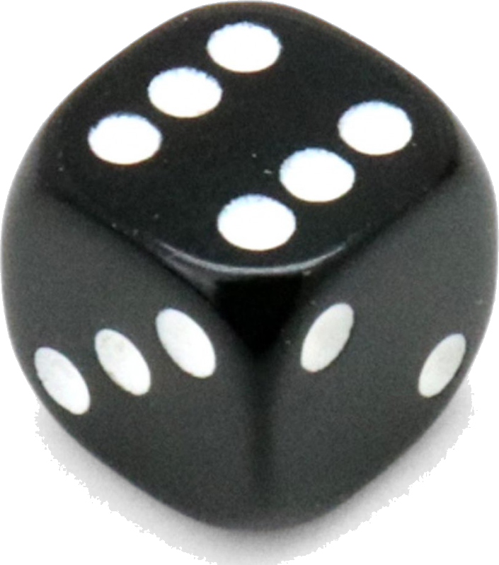
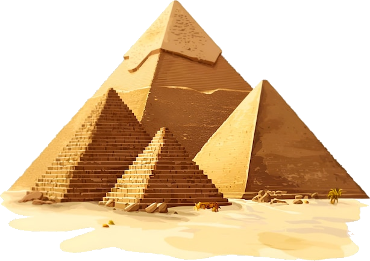
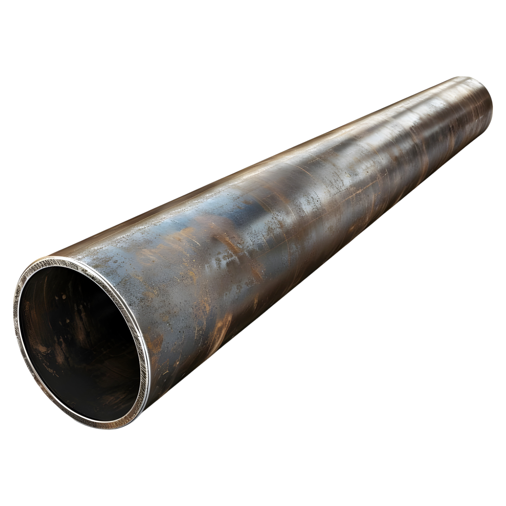
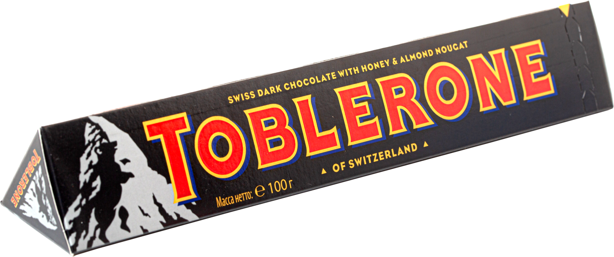
Il existe plusieurs manières de représenter un solide dans le plan :
-
La vue en perspective : C'est une représentation qui permet de voir les différents côtés qui compose le solide donnant l'illusion d'un objet en 3 dimensions. Les traits cachés sont alors souvent représentés en pointillés.
-
Le patron : C'est une représentation de l'objet dont toutes les faces ont été déplié et mise à plat dans le plan.
-
La vue directionnelle : C'est une représentation de face particulière du solide vue dans leurs directions. (Vue de face, de droite, de dessus, etc...)
Exemples :
Vue en perspective cavalière :

Patron :

Vue en perspective isométrique :
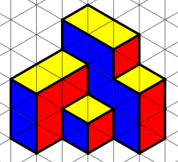
Vue de droite :
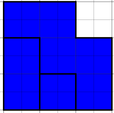
Vue de dessus :
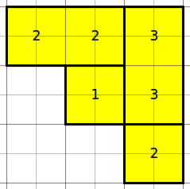
Remarque :
-
Il existe plusieurs types de vue en perspective. Les plus connu sont la perspective cavalière et la perspective isométrique.
Assemblage de cube :
Lorsque l'on assemble plusieurs cubes entre eux, on parle d'assemblage de cube. Il est possible d'utiliser plusieurs types de représentation pour se repérer dans ce type d'assemblage.
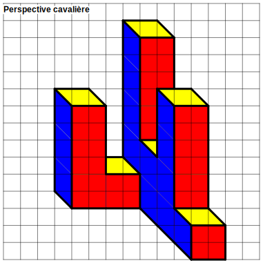
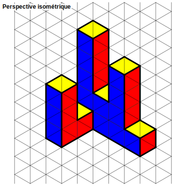
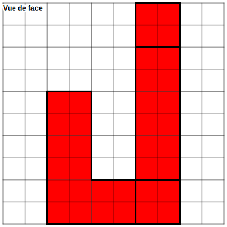
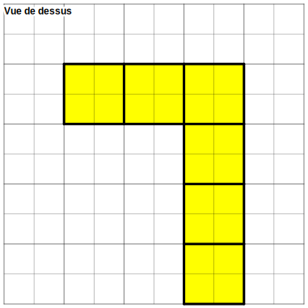
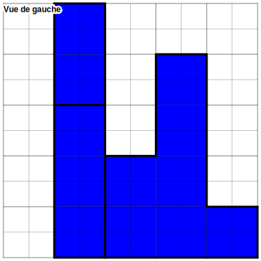
Il est possible d'indiquer le nombre de cube sur les faces pour aider à la représentation